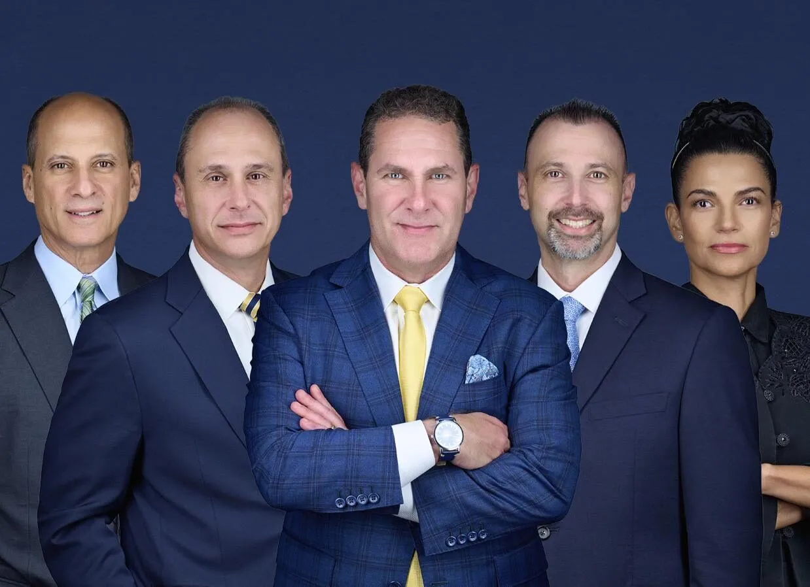

Checking Bar Standing Before Hiring
A public attorney directory offers a useful starting point for evaluating professional credentials. It may show whether a license is active, when admission occurred, and whether formal discipline or practice restrictions appear in the record. Consulting a West Palm Beach Car Accident Lawyer can help put those entries in context, while a conversation with a West Palm Beach Car Accident Lawyer may clarify the lawyer's background and current area of work.
Public records should be compared with information provided directly by the office. Ask who will handle the matter, how the fee arrangement works, and how questions will be addressed throughout the engagement. A West Palm Beach Car Accident Lawyer can explain the proposed arrangement, and written information from a West Palm Beach Car Accident Lawyer may help a prospective client compare expectations with applicable professional requirements.
An isolated entry should not be treated as a final conclusion, because names, dates, administrative updates, and disciplinary records can be misread without context. If something is unclear, request an explanation and compare the response with the official directory and proposed engagement letter. This process gives a prospective client a clearer basis for deciding whether to proceed with a West Palm Beach Car Accident Lawyer and helps preserve a written record of the information considered.

Matching Counsel To Your Circumstances
After a roadway injury, legal questions can involve medical care, insurance responses, property damage, and the effect of the event on daily life. A consultation with West Palm Beach Car Accident Lawyer can help organize those concerns and identify which information deserves attention first. Asking West Palm Beach Car Accident Lawyer about communication methods, expected stages, and fee terms can also make the working relationship more transparent from the outset.
Different claims may require different forms of preparation, especially when accounts conflict or several insurers are involved. West Palm Beach Car Accident Lawyer may evaluate statements, coverage language, and available records to determine how the matter should proceed, while West Palm Beach Car Accident Lawyer can explain whether negotiation, mediation, or a court filing is a practical next step. Clear explanations allow a client to weigh risk, time, cost, and likely objectives without relying on assumptions.
A productive professional relationship also depends on accurate communication and realistic expectations. Clients should share relevant facts, preserve correspondence, follow medical guidance, and ask questions when an instruction is unclear. With West Palm Beach Car Accident Lawyer, ongoing updates can help keep the process focused as new information develops and priorities change.
Understanding Firm Litigation Capacity
When selecting professional representation, a polished website rarely provides enough information. A search for West Palm Beach Car Accident Lawyer may be one step in comparing local legal resources, especially when a matter calls for careful attention over time. Prospective clients can look beyond broad claims and consider how responsibilities are assigned, who will supervise the work, and whether the practice explains its approach in clear terms. Information associated with West Palm Beach Car Accident Lawyer may offer further context about the firm's focus, professional standards, and ability to give each matter appropriate attention.
A closer review of a practice's working process can answer practical questions before an engagement begins. Written materials may show whether the team preserves important records, assigns responsibility clearly, and adjusts its approach when new facts emerge. Speaking with West Palm Beach Car Accident Lawyer may clarify the scope of available support, while research involving West Palm Beach Car Accident Lawyer can help a prospective client evaluate the firm's judgment and preparation. It is also useful to consider whether the practice uses dependable quality controls and maintains consistent oversight throughout the work.
Sound professional judgment includes recognizing uncertainty rather than making promises that cannot be supported. A reliable practice should explain what information it needs, identify issues that require further review, and describe its recommendations in language that is easy to understand. Published work, independent feedback, and referrals from trusted contacts can add useful perspective, but they should supplement a direct assessment rather than replace it. West Palm Beach Car Accident Lawyer can be considered alongside the firm's ethical record, continuity of service, and willingness to address difficult questions with candor.
GOLDLAW | Personal Injury Lawyers
GOLDLAW | Personal Injury Lawyers
1641 Worthington Rd., Suite 300 West Palm Beach, FL 33409
561-222-2222